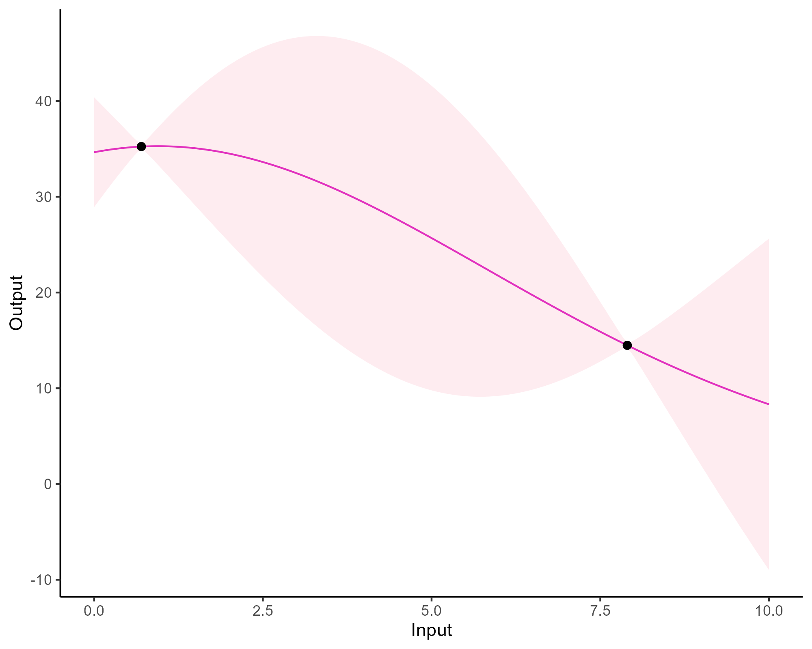
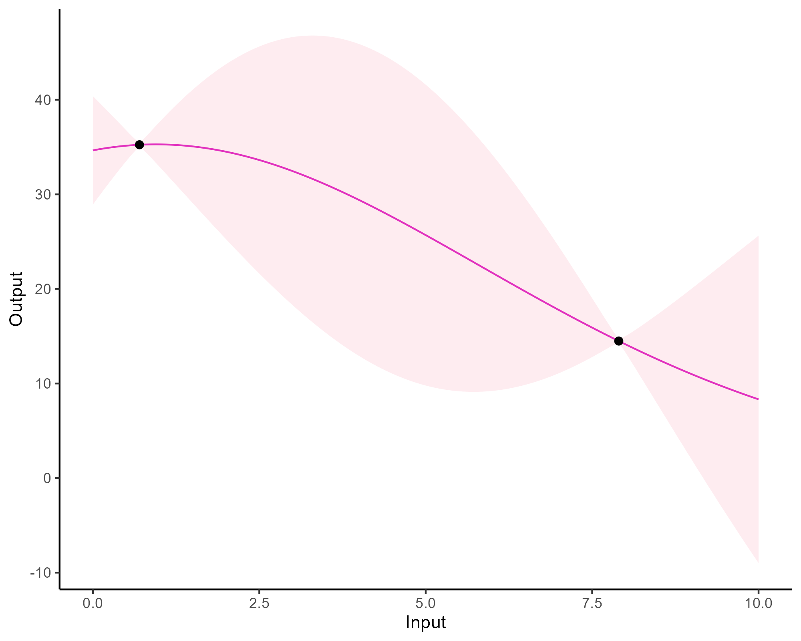

Multi-Mean Gaussian Processes: A novel probabilistic framework for
multi-correlated functional data
Arthur Leroy - Department of
Computer Science, The University of Manchester
PreMeDICaL seminar - 10/07/2023
Let’s start simply with an illustrative example

- Irregular time series (in number of observations and location),
- Many different swimmers per category,
- A few observations per swimmer.
Gaussian process: a prior distribution over functions
\[y = \color{orange}{f}(x) + \epsilon\]
No restrictions on \(\color{orange}{f}\) but a prior distribution on a functional space: \(\color{orange}{f} \sim \mathcal{GP}(m(\cdot),C(\cdot,\cdot))\)
While \(m\) is often assumed to be \(0\), the covariance structure is critical and defined through tailored kernels. For instance, the Squared Exponential (or RBF) kernel is expressed as: \[C_{SE}(x, x^{\prime}) = s^2 \exp \Bigg(\dfrac{(x - x^{\prime})^2}{2 \ell^2}\Bigg)\]

Gaussian process: all you need is a posterior
The Gaussian property induces that unobserved points have no influence on inference:
\[ \int \underbrace{p(f_{\color{grey}{obs}}, f_{\color{purple}{mis}})}_{\mathcal{GP}(m, C)} \ \mathrm{d}f_{\color{purple}{mis}} = \underbrace{p(f_{\color{grey}{obs}})}_{\mathcal{N}(m_{\color{grey}{obs}}, C_{\color{grey}{obs}})} \]
This crucial trick allows us to learn function properties from finite sets of observations. More generally, Gaussian processes are closed under conditioning and marginalisation.
\[\begin{bmatrix} f_{\color{grey}{o}} \\ f_{\color{purple}{m}} \\ \end{bmatrix} \sim \mathcal{N} \left( \begin{bmatrix} m_{\color{grey}{o}} \\ m_{\color{purple}{m}} \\ \end{bmatrix}, \begin{pmatrix} C_{\color{grey}{o, o}} & C_{\color{grey}{o}, \color{purple}{m}} \\ C_{\color{purple}{m}, \color{grey}{o}} & C_{\color{purple}{m, m}} \end{pmatrix} \right)\]
While marginalisation serves for training, conditioning leads
the key GP prediction formula:
\[f_{\color{purple}{m}} \mid f_{\color{grey}{o}} \sim \mathcal{N} \Big( m_{\color{purple}{m}} + C_{\color{purple}{m}, \color{grey}{o}} C_{\color{grey}{o, o}}^{-1} (f_{\color{grey}{o}} - m_{\color{grey}{o}}), \ \ C_{\color{grey}{o}, \color{purple}{m}} - C_{\color{purple}{m}, \color{grey}{o}} C_{\color{grey}{o, o}}^{-1} C_{\color{purple}{m, m}} \Big)\]
Gaussian process: what about a visual summary?


Gaussian process: what about a visual summary?


Gaussian process: what about a visual summary?
 

Gaussian process: what about a visual summary?


Gaussian process: what about a visual summary?
-
Powerful non parametric method offering probabilistic predictions,
- Computational complexity in \(\mathcal{O}(N^3)\), with N the number of observations.
Forecasting with a unique GP
Forecasting with a unique GP

Multi-tAsk GP with common MeAn (Magma)
\[y_i = \mu_0 + f_i + \epsilon_i\]
with:
- \(\mu_0 \sim \mathcal{GP}(m_0, K_{\theta_0}),\)
- \(f_i \sim \mathcal{GP}(0, \Sigma_{\theta_i}), \ \perp \!\!\! \perp_i,\)
- \(\epsilon_i \sim \mathcal{GP}(0, \sigma_i^2), \ \perp \!\!\! \perp_i.\)
It follows that:
\[y_i \mid \mu_0 \sim \mathcal{GP}(\mu_0, \Sigma_{\theta_i} + \sigma_i^2 I), \ \perp \!\!\! \perp_i\]
\(\rightarrow\) Unified GP framework with a common mean process \(\mu_0\), and individual-specific process \(f_i\),
\(\rightarrow\) Naturaly handles irregular grids of input data.
Goal: Learn the
hyper-parameters, (and \(\mu_0\)’s
hyper-posterior).
Difficulty: The likelihood depends on \(\mu_0\), and individuals are not
independent.
EM algorithm
E step: \[ \begin{align} p(\mu_0(\mathbf{t}) \mid \textbf{y}, \hat{\Theta}) &\propto \mathcal{N}(\mu_0(\mathbf{t}); m_0(\textbf{t}), \textbf{K}_{\hat{\theta}_0}^{\textbf{t}}) \times \prod\limits_{i =1}^M \mathcal{N}(\mathbf{y}_i; \mu_0( \textbf{t}_i), \boldsymbol{\Psi}_{\hat{\theta}_i, \hat{\sigma}_i^2}^{\textbf{t}_i}) \\ &= \mathcal{N}(\mu_0(\mathbf{t}); \hat{m}_0(\textbf{t}), \hat{\textbf{K}}^{\textbf{t}}), \end{align} \] M step:
\[ \begin{align*} \hat{\Theta} &= \underset{\Theta}{\arg\max} \ \ \log \mathcal{N} \left( \hat{m}_0(\textbf{t}); m_0(\textbf{t}), \mathbf{K}_{\theta_0}^{\textbf{t}} \right) - \dfrac{1}{2} Tr \left( \hat{\mathbf{K}}^{\textbf{t}} {\mathbf{K}_{\theta_0}^{\textbf{t}}}^{-1} \right) \\ & \ \ \ + \sum\limits_{i = 1}^{M}\left\{ \log \mathcal{N} \left( \mathbf{y}_i; \hat{m}_0(\mathbf{t}_i), \boldsymbol{\Psi}_{\theta_i, \sigma^2}^{\mathbf{t}_i} \right) - \dfrac{1}{2} Tr \left( \hat{\mathbf{K}}^{\mathbf{t}_i} {\boldsymbol{\Psi}_{\theta_i, \sigma^2}^{\mathbf{t}_i}}^{-1} \right) \right\}. \end{align*} \]
Prediction
For a new individual, we observe
some data \(y_*(\textbf{t}_*)\). Let us
recall:
\[y_* \mid \mu_0 \sim \mathcal{GP}(\mu_0, \boldsymbol{\Psi}_{\theta_*, \sigma_*^2}), \ \perp \!\!\! \perp_i\]
Goals:
- derive a analytical predictive distribution at arbitrary inputs \(\mathbf{t}^{p}\),
- sharing the information from training individuals, stored in the mean process \(\mu_0\).
Difficulties:
- the model is conditionned over \(\mu_0\), a latent, unobserved quantity,
- defining the adequate target distribution is not straightforward,
- working on a new grid of inputs \(\mathbf{t}^{p}_{*}= (\mathbf{t}_{*}, \mathbf{t}^{p})^{\intercal},\) potentially distinct from \(\mathbf{t}.\)
Prediction: the key idea
Defining a multi-task prior distribution by:
- conditioning on training data,
- integrating over \(\mu_0\)’s hyper-posterior distribution.
\[\begin{align} p(y_* (\textbf{t}_*^{p}) \mid \textbf{y}) &= \int p\left(y_* (\textbf{t}_*^{p}) \mid \textbf{y}, \mu_0(\textbf{t}_*^{p})\right) p(\mu_0 (\textbf{t}_*^{p}) \mid \textbf{y}) \ d \mu_0(\mathbf{t}^{p}_{*}) \\ &= \int \underbrace{ p \left(y_* (\textbf{t}_*^{p}) \mid \mu_0 (\textbf{t}_*^{p}) \right)}_{\mathcal{N}(y_*; \mu_0, \Psi_*)} \ \underbrace{p(\mu_0 (\textbf{t}_*^{p}) \mid \textbf{y})}_{\mathcal{N}(\mu_0; \hat{m}_0, \hat{K})} \ d \mu_0(\mathbf{t}^{p}_{*}) \\ &= \mathcal{N}( \hat{m}_0 (\mathbf{t}^{p}_{*}), \underbrace{\Psi_* + \hat{K}}_{\Gamma}) \end{align}\]
Prediction: additional steps
-
Multi-task prior:
\[p \left( \begin{bmatrix} y_*(\color{grey}{\mathbf{t}_{*}}) \\ y_*(\color{purple}{\mathbf{t}^{p}}) \\ \end{bmatrix} \mid \textbf{y} \right) = \mathcal{N} \left( \begin{bmatrix} y_*(\color{grey}{\mathbf{t}_{*}}) \\ y_*(\color{purple}{\mathbf{t}^{p}}) \\ \end{bmatrix}; \ \begin{bmatrix} \hat{m}_0(\color{grey}{\mathbf{t}_{*}}) \\ \hat{m}_0(\color{purple}{\mathbf{t}^{p}}) \\ \end{bmatrix}, \begin{pmatrix} \Gamma_{\color{grey}{**}} & \Gamma_{\color{grey}{*}\color{purple}{p}} \\ \Gamma_{\color{purple}{p}\color{grey}{*}} & \Gamma_{\color{purple}{pp}} \end{pmatrix} \right)\]
-
Multi-task posterior:
\[p(y_*(\color{purple}{\mathbf{t}^{p}}) \mid y_*(\color{grey}{\mathbf{t}_{*}}), \textbf{y}) = \mathcal{N} \Big( y_*(\color{purple}{\mathbf{t}^{p}}); \ \hat{\mu}_{*}(\color{purple}{\mathbf{t}^{p}}) , \hat{\Gamma}_{\color{purple}{pp}} \Big)\]
with:
- \(\hat{\mu}_{*}(\color{purple}{\mathbf{t}^{p}}) = \hat{m}_0(\color{purple}{\mathbf{t}^{p}}) + \Gamma_{\color{purple}{p}\color{grey}{*}}\Gamma_{\color{grey}{**}}^{-1} (y_*(\color{grey}{\mathbf{t}_{*}}) - \hat{m}_0 (\color{grey}{\mathbf{t}_{*}}))\)
- \(\hat{\Gamma}_{\color{purple}{pp}} = \Gamma_{\color{purple}{pp}} - \Gamma_{\color{purple}{p}\color{grey}{*}}\Gamma_{\color{grey}{**}}^{-1} \Gamma_{\color{grey}{*}\color{purple}{p}}\)
Leroy et al. - MAGMA: Inference and Prediction using Multi-Task Gaussian Processes with Common Mean - Machine Learning - 2022
A GIF is worth a thousand words
A GIF is worth a thousand words
Magma + Clustering = MagmaClust
Leroy et al. - Cluster-Specific Predictions with Multi-Task Gaussian Processes - Journal of Machine Learning Research - 2023
A unique underlying mean process might be too restrictive.
\(\rightarrow\) Mixture of multi-task GPs:
\[y_i = \mu_0 + f_i + \epsilon_i\]
with:
- \(\color{green}{Z_{i}} \sim \mathcal{M}(1, \color{green}{\boldsymbol{\pi}}), \ \perp \!\!\! \perp_i,\)
- \(\mu_0 \sim \mathcal{GP}(m_0, K_{\theta_0}), \ \perp \!\!\! \perp_k,\)
- \(f_i \sim \mathcal{GP}(0, \Sigma_{\theta_i}), \ \perp \!\!\! \perp_i,\)
- \(\epsilon_i \sim \mathcal{GP}(0, \sigma_i^2), \ \perp \!\!\! \perp_i.\)
It follows that:
\[y_i \mid \mu_0 \sim \mathcal{GP}(\mu_0, \Psi_i), \ \perp \!\!\! \perp_i\]
Magma + Clustering = MagmaClust
Leroy et al. - Cluster-Specific Predictions with Multi-Task Gaussian Processes - Journal of Machine Learning Research - 2023
A unique underlying mean process might be too restrictive.
\(\rightarrow\) Mixture of multi-task GPs:
\[y_i \mid \{\color{green}{Z_{ik}} = 1 \} = \mu_{\color{green}{k}} + f_i + \epsilon_i\]
with:
- \(\color{green}{Z_{i}} \sim \mathcal{M}(1, \color{green}{\boldsymbol{\pi}}), \ \perp \!\!\! \perp_i,\)
- \(\mu_{\color{green}{k}} \sim \mathcal{GP}(m_{\color{green}{k}}, \color{green}{C_{\gamma_{k}}})\ \perp \!\!\! \perp_{\color{green}{k}},\)
- \(f_i \sim \mathcal{GP}(0, \Sigma_{\theta_i}), \ \perp \!\!\! \perp_i,\)
- \(\epsilon_i \sim \mathcal{GP}(0, \sigma_i^2), \ \perp \!\!\! \perp_i.\)
It follows that:
\[y_i \mid \mu_0 \sim \mathcal{GP}(\mu_0, \Psi_i), \ \perp \!\!\! \perp_i\]
Magma + Clustering = MagmaClust
A unique underlying mean process might be too restrictive.
\(\rightarrow\) Mixture of multi-task GPs:
\[y_i \mid \{\color{green}{Z_{ik}} = 1 \} = \mu_{\color{green}{k}} + f_i + \epsilon_i\]
with:
- \(\color{green}{Z_{i}} \sim \mathcal{M}(1, \color{green}{\boldsymbol{\pi}}), \ \perp \!\!\! \perp_i,\)
- \(\mu_{\color{green}{k}} \sim \mathcal{GP}(m_{\color{green}{k}}, \color{green}{C_{\gamma_{k}}})\ \perp \!\!\! \perp_{\color{green}{k}},\)
- \(f_i \sim \mathcal{GP}(0, \Sigma_{\theta_i}), \ \perp \!\!\! \perp_i,\)
- \(\epsilon_i \sim \mathcal{GP}(0, \sigma_i^2), \ \perp \!\!\! \perp_i.\)
It follows that:
\[y_i \mid \{ \boldsymbol{\mu} , \color{green}{\boldsymbol{\pi}} \} \sim \sum\limits_{k=1}^K{ \color{green}{\pi_k} \ \mathcal{GP}\Big(\mu_{\color{green}{k}}, \Psi_i^\color{green}{k} \Big)}, \ \perp \!\!\! \perp_i\]
Learning
The integrated likelihood is not tractable anymore due to posterior dependencies between \( \boldsymbol{\mu} = \{\mu_\color{green}{k}\}_\color{green}{k}\) and \(\mathbf{Z}= \{Z_i\}_i\).
Variational inference still allows us to maintain closed-form approximations. For any distribution \(q\):
\[\log p(\textbf{y} \mid \Theta) = \mathcal{L}(q; \Theta) + KL \big( q \mid \mid p(\boldsymbol{\mu}, \boldsymbol{Z} \mid \textbf{y}, \Theta)\big)\]
The posterior independence is forced by an approximation assumption:
\[q(\boldsymbol{\mu}, \boldsymbol{Z}) = q_{\boldsymbol{\mu}}(\boldsymbol{\mu})q_{\boldsymbol{Z}}(\boldsymbol{Z}).\]
Maximising the lower bound \(\mathcal{L}(q; \Theta)\) induces natural factorisations over clusters and individuals for the variational distributions.
Variational EM
E step: \[ \begin{align} \hat{q}_{\boldsymbol{\mu}}(\boldsymbol{\mu}) &= \color{green}{\prod\limits_{k = 1}^K} \mathcal{N}(\mu_\color{green}{k};\hat{m}_\color{green}{k}, \hat{\textbf{C}}_\color{green}{k}) , \hspace{2cm} \hat{q}_{\boldsymbol{Z}}(\boldsymbol{Z}) = \prod\limits_{i = 1}^M \mathcal{M}(Z_i;1, \color{green}{\boldsymbol{\tau}_i}) \end{align} \] M step:
\[ \begin{align*} \hat{\Theta} &= \underset{\Theta}{\arg\max} \sum\limits_{k = 1}^{K}\ \mathcal{N} \left( \hat{m}_k; \ m_k, \boldsymbol{C}_{\color{green}{\gamma_k}} \right) - \dfrac{1}{2} \textrm{tr}\left( \mathbf{\hat{C}}_k\boldsymbol{C}_{\color{green}{\gamma_k}}^{-1}\right) \\ & \hspace{1cm} + \sum\limits_{k = 1}^{K}\sum\limits_{i = 1}^{M}\tau_{ik}\ \mathcal{N} \left( \mathbf{y}_i; \ \hat{m}_k, \boldsymbol{\Psi}_{\color{brown}{\theta_i}, \color{brown}{\sigma_i^2}} \right) - \dfrac{1}{2} \textrm{tr}\left( \mathbf{\hat{C}}_k\boldsymbol{\Psi}_{\color{brown}{\theta_i}, \color{brown}{\sigma_i^2}}^{-1}\right) \\ & \hspace{1cm} + \sum\limits_{k = 1}^{K}\sum\limits_{i = 1}^{M}\tau_{ik}\log \color{green}{\pi_{k}} \end{align*} \]
Prediction
-
Multi-task posterior for each cluster:
\[ p(y_*(\mathbf{t}^{p}) \mid \color{green}{Z_{*k}} = 1, y_*(\mathbf{t}_{*}), \textbf{y}) = \mathcal{N} \Big( y_*(\mathbf{t}^{p}); \ \hat{\mu}_{*}^\color{green}{k}(\mathbf{t}^{p}) , \hat{\Gamma}_{pp}^\color{green}{k} \Big), \forall \color{green}{k}, \]
\(\hat{\mu}_{*}^\color{green}{k}(\mathbf{t}^{p}) = \hat{m}_\color{green}{k}(\mathbf{t}^{p}) + \Gamma^\color{green}{k}_{p*} {\Gamma^\color{green}{k}_{**}}^{-1} (y_*(\mathbf{t}_{*}) - \hat{m}_\color{green}{k} (\mathbf{t}_{*}))\)
\(\hat{\Gamma}_{pp}^\color{green}{k} = \Gamma_{pp}^\color{green}{k} - \Gamma_{p*}^\color{green}{k} {\Gamma^{\color{green}{k}}_{**}}^{-1} \Gamma^{\color{green}{k}}_{*p}\) -
Predictive multi-task GPs mixture:
\[p(y_*(\textbf{t}^p) \mid y_*(\textbf{t}_*), \textbf{y}) = \color{green}{\sum\limits_{k = 1}^{K} \tau_{*k}} \ \mathcal{N} \big( y_*(\mathbf{t}^{p}); \ \hat{\mu}_{*}^\color{green}{k}(\textbf{t}^p) , \hat{\Gamma}_{pp}^\color{green}{k}(\textbf{t}^p) \big).\]
An image is still worth many words


By identifying the underlying clustering structure, MagmaClust discards unnecessary information and provides enhanced predictions as well as a lower uncertainty.
Cluster-specific predictions
Each cluster-specific prediction is weighted by its membership probability \(\color{green}{\tau_{*k}}\).
Clustering and prediction performances

Feel free to draw your own figures…

Implemented as an R package MagmaClustR: https://arthurleroy.github.io/MagmaClustR
… it also works with muti-dimensional inputs

Multi-Means Gaussian processes
Different sources of correlation might exist in the data (e.g. multiple genes and individuals)
\[y_{\color{blue}{i}\color{red}{j}} = \mu_{0} + f_\color{blue}{i} + g_\color{red}{j} + \epsilon_{\color{blue}{i}\color{red}{j}}\]
with:
- \(\mu_{0} \sim \mathcal{GP}(m_{0}, {C_{\gamma_{0}}}), \ f_{\color{blue}{i}} \sim \mathcal{GP}(0, \Sigma_{\theta_{\color{blue}{i}}}), \ \epsilon_{\color{blue}{i}\color{red}{j}} \sim \mathcal{GP}(0, \sigma_{\color{blue}{i}\color{red}{j}}^2), \ \perp \!\!\! \perp_i\)
- \(g_{\color{red}{j}} \sim \mathcal{GP}(0, \Sigma_{\theta_{\color{red}{j}}})\)
Key idea for training: define \(\color{blue}{M}+\color{red}{P} + 1\) different hyper-posterior distributions for \(\mu_0\) by conditioning over the adequate sub-sample of data.
\[p(\mu_0 \mid \{y_{\color{blue}{i}\color{red}{j}} \}_{\color{red}{j} = 1,\dots, \color{red}{P}}^{\color{blue}{i} = 1,\dots, \color{blue}{M}}) = \mathcal{N}\Big(\mu_{0}; \ \hat{m}_{0}, \hat{K}_0 \Big).\]
\[p(\mu_0 \mid \{y_{\color{blue}{i}\color{red}{j}} \}_{\color{blue}{i} = 1,\dots, \color{blue}{M}}) = \mathcal{N}\Big(\mu_{0}; \ \hat{m}_{\color{red}{j}}, \hat{K}_\color{red}{j} \Big), \ \forall \color{red}{j} \in 1, \dots, \color{red}{P}\]
\[p(\mu_0 \mid \{y_{\color{blue}{i}\color{red}{j}} \}_{\color{red}{j} = 1,\dots, \color{red}{P}}) = \mathcal{N}\Big(\mu_{0}; \ \hat{m}_{\color{blue}{i}}, \hat{K}_\color{blue}{i} \Big), \forall \color{blue}{i} \in 1, \dots, \color{blue}{M} \]
Multi-Mean GPs: multiple hyper-posterior mean processes

Each sub-sample of data leads to a specific hyper-posterior distribution of the mean process \(\mu_0\).
Multi-Mean GPs: an adaptive prediction
Although sharing the same mean process, different tasks still lead to different predictions.
Multi-mean GP provides adaptive predictions according to the relevant context.
Forecasting thousands of genenomic time series…
… with the adequate quantification of uncertainty
Answer to the \(\mathbb{P}(\)first question\() \approx 1\)
\(\rightarrow\) All methods
scale linearly with the number of tasks
and clusters.
\(\rightarrow\) Parallel computing
can be used to speed up training.
Overall, the computational
complexity is:
- Magma: \[ \mathcal{O}(M\times N_i^3 + N^3) \]
- MagmaClust: \[ \mathcal{O}(M\times N_i^3 + K \times N^3) \]
- Multi-Mean Gaussian Processes: \[ \mathcal{O}(M \times P \times N_{ij}^3 + (M + P) \times N^3) \]
Related current projects: BMI evolution patterns

And also:
- Extension to categorical outputs (collaboration with Rim Essifi and Sophie Dabo)
- Sparse approximations to deal with larger data sets
- Deriving a stochastic version of the training procedure
- A great idea you may have? I’d be happy to discuss new collaborations